Turn modern pictures into authentic graphics for 15 classic computers - with their real palettes, resolutions, file formats and disk images.
macOS 15.7+ Version 4.5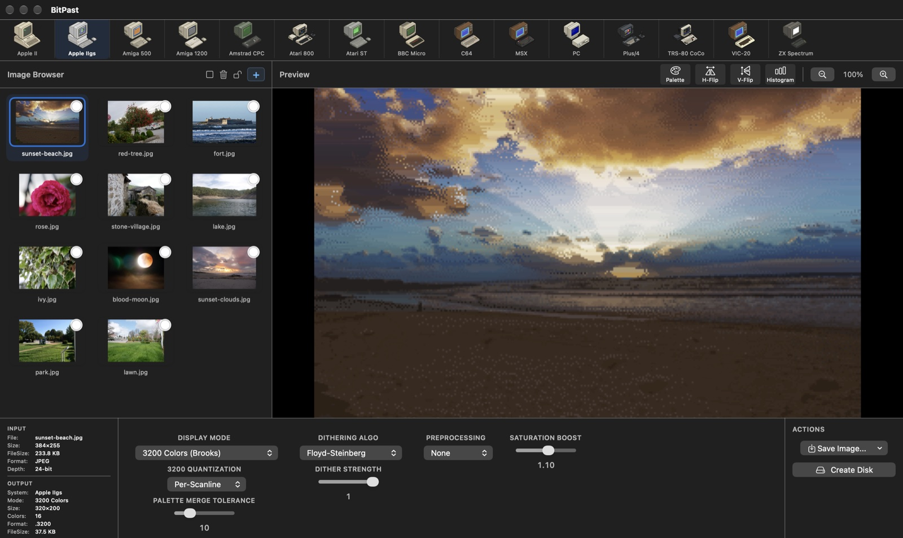
Better colors, disk images that load on real machines, and an app that stays responsive while it works.
The same photo, converted with each machine's default settings - exactly as BitPast saves it, shown on a 4:3 screen like the original hardware.
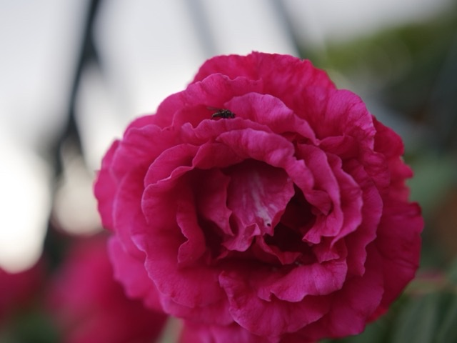
The original photo
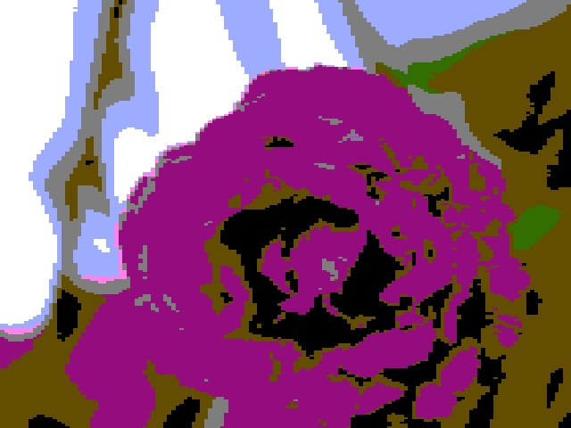
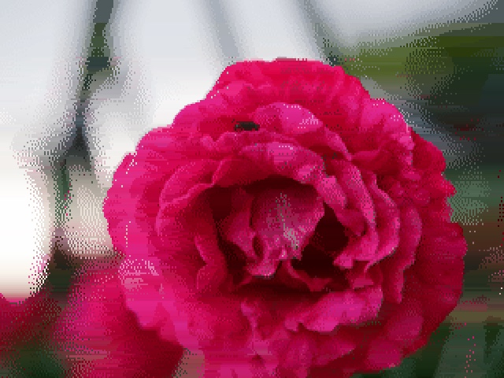
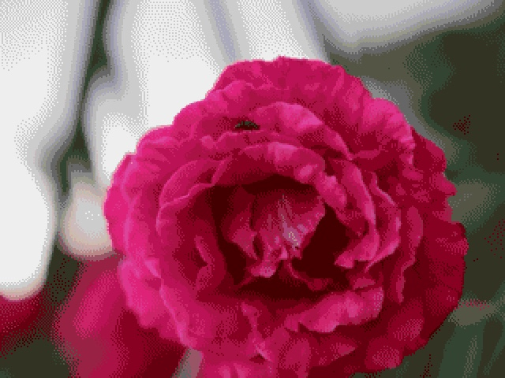
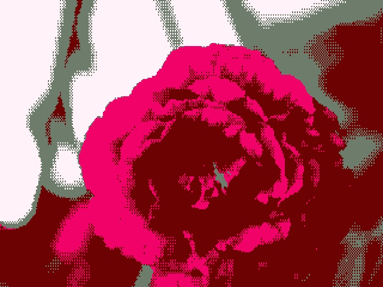
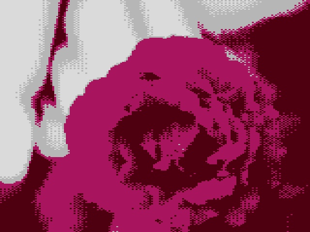
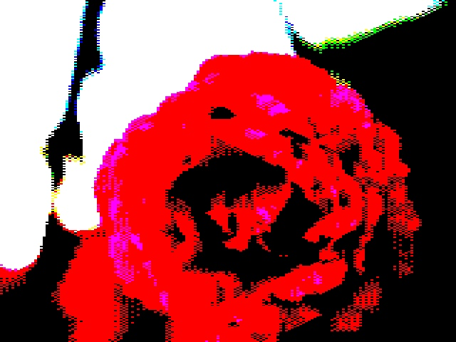
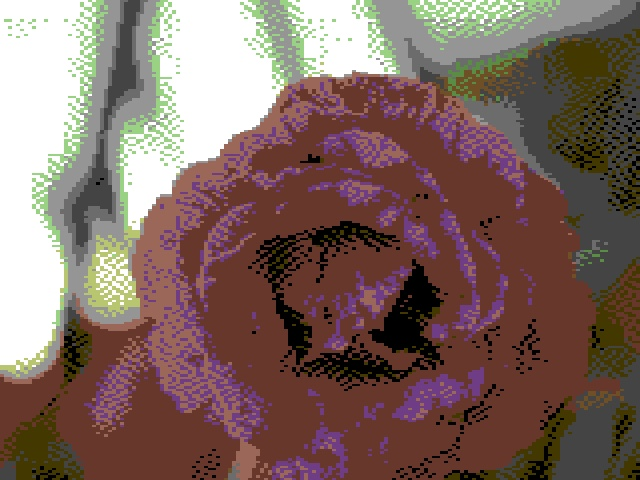
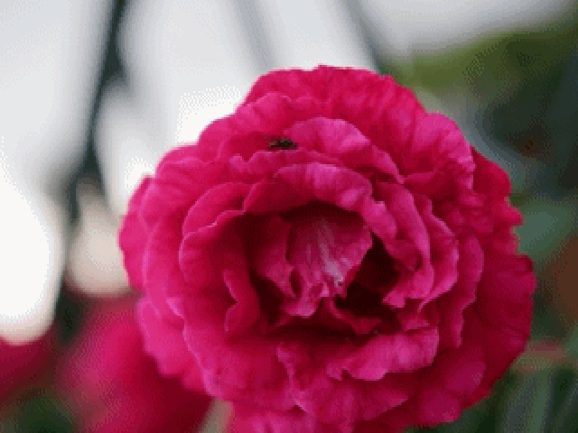
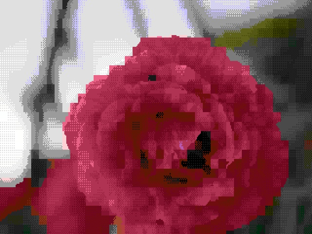
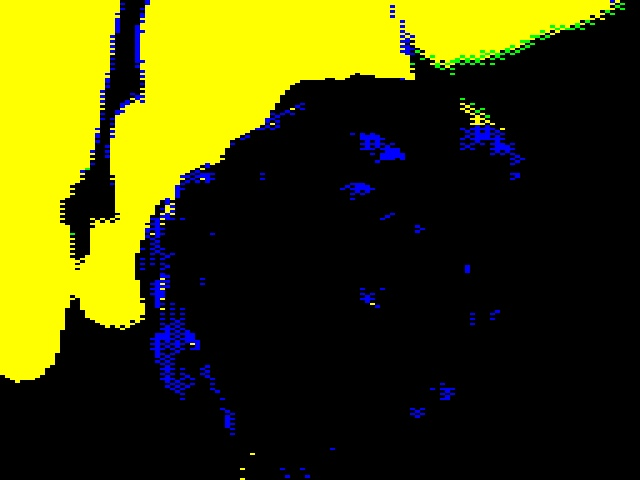
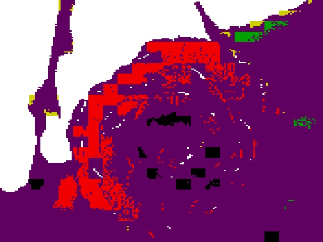
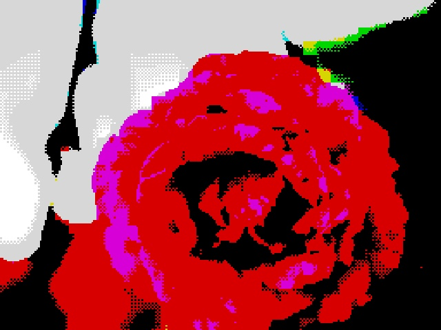
Drop in your pictures, pick a machine, tune the look - and pick a theme that matches.
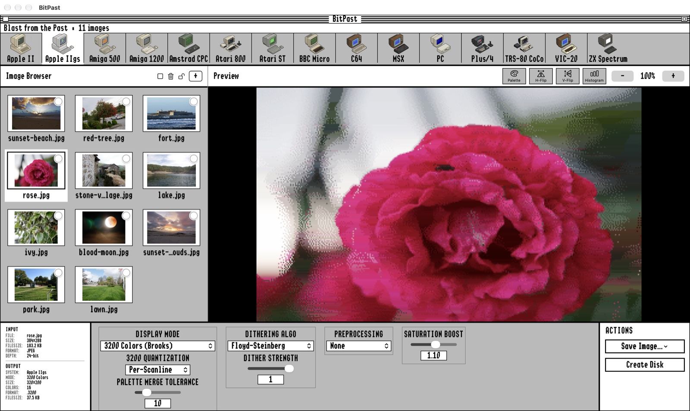
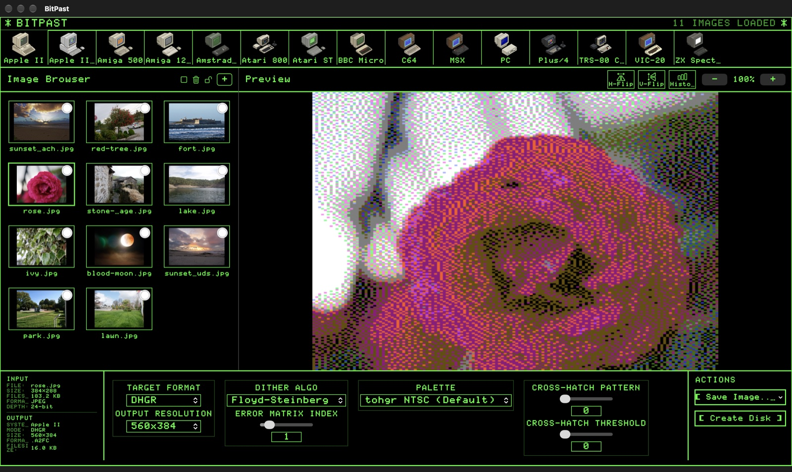
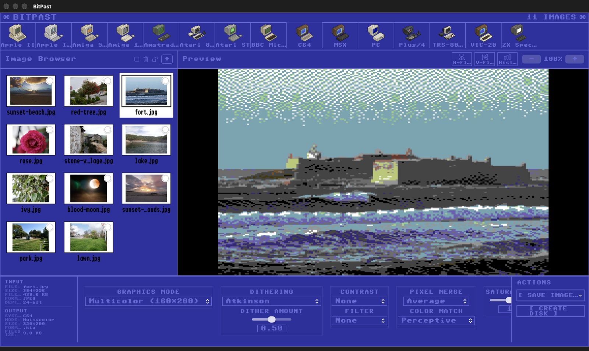
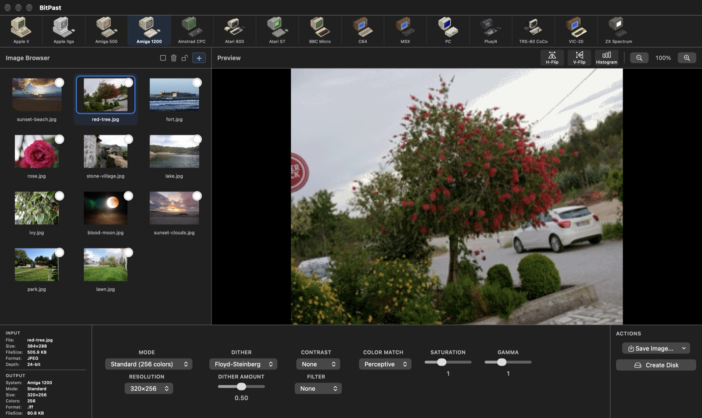
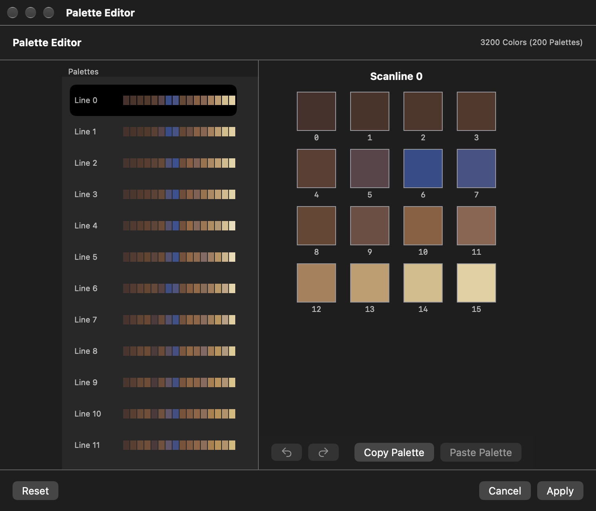
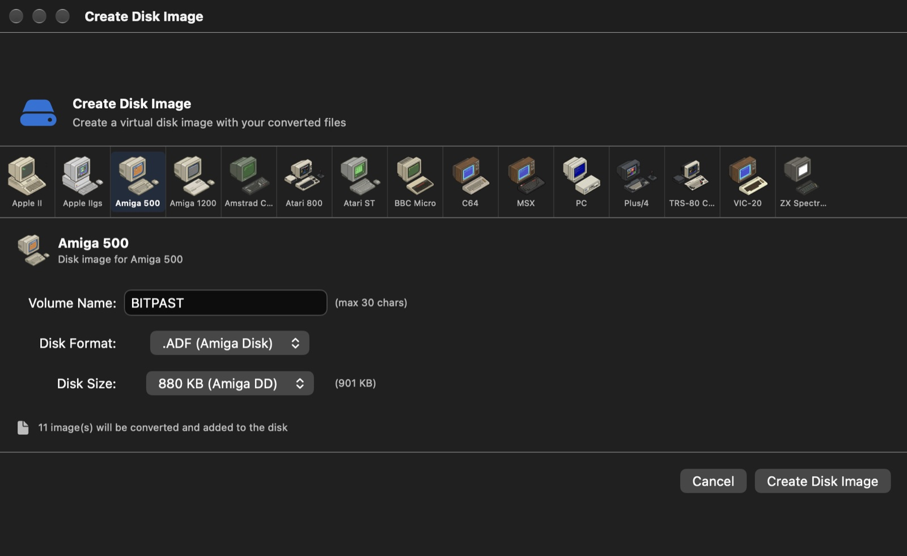
Everything you need to create authentic retro graphics.
Apple II and IIgs, Amiga 500 and 1200, Amstrad CPC, Atari 800 and ST, BBC Micro, C64, MSX, IBM PC, Plus/4, TRS-80 CoCo, VIC-20 and ZX Spectrum.
Each machine's own colors, resolutions and limits - from Apple IIgs 3200 colors and Amiga HAM to Spectrum attribute cells and C64 multicolor.
Colors are chosen to cover the whole picture, so small details keep their color even when a machine can only show a handful.
15+ dithering algorithms, HE, CLAHE and SWAHE contrast, filters, color matching modes, saturation and gamma - with live preview.
Save .SHR, .3200, .IFF, .PI1, .KLA, .ART, .PRG, .SCR, .PCX, .SC5 and more, and put them on disk images for every machine.
Edit the palettes of Apple IIgs pictures line by line, copy and paste palettes, with full undo and redo.
Drag in many pictures at once, lock settings per picture, and export them all - or straight onto a disk.
Work in the GS/OS look, Apple II green phosphor or Commodore 64 blue - or a clean modern interface.
Modes and native file formats for every machine.
Create disk images for every supported machine.
| Extension | Machine | Sizes |
|---|---|---|
| .po .2mg .hdv | Apple II / IIgs (ProDOS) | 140 KB, 800 KB, 32 MB |
| .d64 .d71 .d81 | C64, VIC-20, Plus/4 | 170 KB, 340 KB, 800 KB |
| .adf | Amiga 500 / 1200 | 880 KB, 1.76 MB |
| .atr | Atari 800 (DOS 2 / 2.5) | 90 KB, 130 KB, 180 KB, 360 KB |
| .st | Atari ST | 360 KB, 720 KB, 1.44 MB |
| .ssd .dsd | BBC Micro (DFS) | 100 KB, 200 KB, 400 KB |
| .dsk | MSX | 360 KB, 720 KB |
| .dsk | Amstrad CPC | 180 KB, 360 KB |
| .trd .dsk | ZX Spectrum (TR-DOS, +3) | 640 KB, 180 KB |
| .img | IBM PC | 360 KB, 720 KB, 1.2 MB, 1.44 MB |
| .dsk | TRS-80 CoCo (RS-DOS) | 180 KB, 360 KB |
Get it ready to run on the Mac App Store. Buying it is also a way to say thank you for my work - it makes me very happy and keeps the app growing.